第6章 价格差，贝塔系数和风险
在上一章，我们总结了日平均收益并不存在明显的自回归关系。这意味着以前的日收益并不能帮助我们预测今天的收益。在这个章节我们想做一个假想：我们可以人为构建一个具备一定预测功能的时间序列。我们将这个新的时间序列称为价格差时间序列。我们想要说明的是一个股票的价格差要比股票本身更适于交易。当然，这个说法本身是主观臆断的。但还请看看我接下来怎么做。我最关心的是给出一个思考的方法，而非关于价格变化的具体事实。
定义股票价格差
一个二元股票价格差（配对）包括看涨第一个股票和看跌第二个股票。某些价格差甚至可以是同时看涨（买入）或者看跌（卖出）两支股票的差值。比方说，一个股票跟踪某个指数的倒数（比方说SDS ETF），那么我们可以同时买入指数和指数倒数的两个ETF来构建一个符合我们目标的价格差。配对交易（pairs trading)是一种交易方法，有记录表明它是由Tartaglia1于八十年代在摩根斯坦利短暂工作时首先使用的[131]。
从商业的角度来看，如果两个公司出售类似的商品，那么他们应该会被相同的内在商业和经济因素所影响。如果经济基本面不好，那么他们的销售也会下降。如果用于生产的某样原料缺乏，那么两个公司生产成本都会增加，而原料库存都会下降。如果公司A大幅降低商品价格，公司B也会这么做。总体来看，公司A和B被相同的外部因素和复杂的反馈机制联系着。
我们不会通过共同因子模型2来冒昧解释股票A和B的收益。事实上，我们只会研究两个股票的相对价格变化。也就是说，股票价格差的动态变化。
在某个已知的时间点，我们也许并不能知道可口可乐和百事可乐股票价格会上涨还是下跌。然而，我们确乎相信相同的潜在因子会影响这两个公司各自的股票价格。如果在某天可口可乐股票上涨，那么百事可乐也会。这种关系是我们想要建模研究的。
让我们以价格差变化来考虑可口可乐和百事可乐股票价格变化。如果我们想要建立一个市值中性（dollar-neutral)的投资组合，那么我们应该买入多少可口可乐和卖出多少百事可乐的股票呢？一个市值中性的投资组合指的是投资组合的总投资额接近于0.
这就是价格差beta尝试解决的问题。我们可以想象beta是两股票价格变化的散点图的最佳线性拟合的斜率。beta系数一般是从百分比收益而非价格变化求出的。然而，从股票交易的角度上来看，价格差变化确实提供更加直观的结论。从原始价格或者是价格的某些变换，我们也是可以求出beta系数的。我们把这些beta系数结果当成是一个协整（cointegrating)向量3。注意到对非平稳时间序列的回归分析，比如股票价格，会导致没有意义的结论。只有当股票配对是协整的，这种回归分析才有意义。协整性的检验取决于残差结果的统计分析。
如下是可口可乐关于百事可乐一年内价格变化的散点图：
pepsi <- getSymbols('PEP', from = '2013-01-01',
to = '2014-01-01', adjust = T, auto.assign = FALSE)
coke <- getSymbols('COKE', from = '2013-01-01',
to = '2014-01-01', adjust = T, auto.assign = FALSE)
Sys.setenv(TZ = "UTC")
prices <- cbind(pepsi[, 6], coke[, 6])
price_changes <- apply(prices, 2, diff)
plot(price_changes[, 1], price_changes[, 2],
xlab = "Coke price changes",
ylab = "Pepsi price changes",
main = "Pepsi vs. Coke",
cex.main = 0.8,
cex.lab = 0.8,
cex.axis = 0.8)
grid()
ans <- lm(price_changes[, 1] ~ price_changes[, 2])
beta <- ans$coefficients[2]在这段时间，如果可口可乐上涨，那么百事可乐会上涨。如果我们购买1000份额的可口可乐股票，那么我们应该卖出多少百事可乐的份额来保证价钱中性呢？答案是。
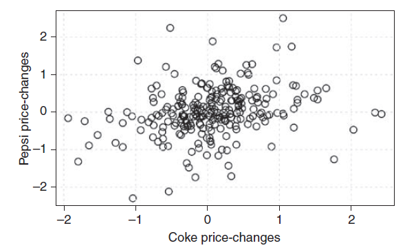
图6.1 百事可乐对可口可乐的价格变化
那么，这个beta系数告诉我们什么？我们假设可口可乐价格变化是非随机变量，而百事可乐价格变化是随机变量。这隐含的意思就是这两个时间序列的变化仅仅取决于百事可乐。那么如果我们假设所有的变化取决于可口可乐呢？那么我们会得到另外一个beta系数。
ans2 <- lm(price_changes[, 2] ~ price_changes[, 1])
beta2 <- ans2$coefficients[2]
beta
## [1] 0.2614627
beta2
## [1] 0.2539855普通最小二乘法和总体最小二乘法
请注意这两个beta系数的差别。他们并非是像我们直观认为的逆相关。这个beta非一致性导致一些交易员采用了总体最小二乘法4（Total Least Squares）的beta，而非普通最小二乘（Ordinary Least Squares）的beta。
总体最小二乘回归尝试解释含有两个时间序列的一个系统的变化。它是通过求每个散点到其最佳拟合直线的垂直距离的平方和的最小值来实现的。普通最小二乘法则是对每个散点到其最佳拟合直线的竖直或者水平距离的平方和来实现的。
总体最小二乘回归beta可以用主成分分析(Principal Component Analysis，PCA)5求出。在R里面，我们可以用prcomp()函数做主成分分析。主成分分析的整个想法就是将一些相关的观测值转化成一组线性不相关的观测值。这些新的观测值被称为主成分。Paul Teetor的讲座很好地阐述这个方法http://quanttrader.info/public/CRUG MeetUp.pdf。
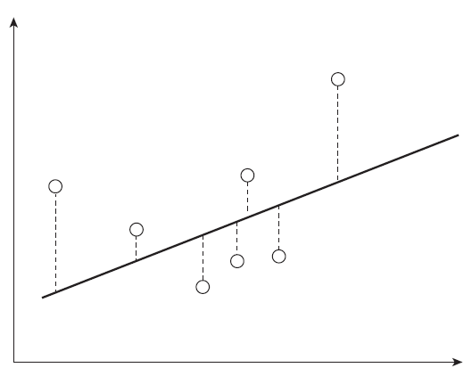
图6.2 普通最小二乘法的最短距离
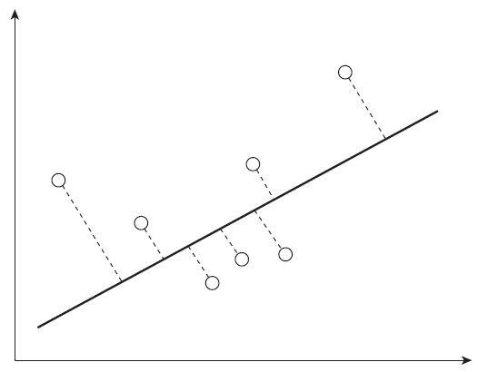
图6.3 总体最小二乘法的最短距离
寻找这些主成分的思考步骤如下：
寻找散点图上最大方差所在方向
寻找垂直（正交）于第一个方向的第二最佳方向
这些方向（向量）就是主成分。如下是算出这些主成分的代码
# 获取数据
SPY <- getSymbols('SPY', from = '2011-01-01',
to = '2012-12-31', adjust = T, auto.assign = FALSE)
AAPL <- getSymbols('AAPL', from = '2011-01-01',
to = '2012-12-31', adjust = T, auto.assign = FALSE)
# 计算价格的差
x <- diff(as.numeric(SPY[, 4]))
y <- diff(as.numeric(AAPL[, 4]))
plot(x, y, main = "Scatter plot of returns. SPY vs. AAPL",
cex.main = 0.8, cex.lab = 0.8, cex.axis = 0.8)
abline(lm(y ~ x))
abline(lm(x ~ y), lty = 2)
grid()
# 总体最小二乘回归
r <- prcomp( ~ x + y )
slope <- r$rotation[2, 1] / r$rotation[1, 1]
intercept <- r$center[2] - slope * r$center[1]
# 在图中显示第一主成分
abline(a = intercept, b = slope, lty = 3)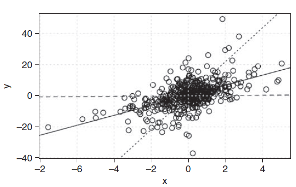
图6.4 SPY和苹果股票的总体最小二乘回归
构建价格差
在下面的例子，我们会建立股票价格差，然后从简单的交易策略中寻找买卖信号。我们的交易策略是当价格差低于某个低位时买入，高于某个高位时卖出。为了操作更简单易行，我们将这个目标分成不同的函数。
# 计算价格差的函数
calculate_spread <- function(x, y, beta) {
return(y - beta * x)
}
# 给定起始和结束日期，计算beta与平均值的函数
calculate_beta_and_level <- function(x, y,
start_date, end_date) {
require(xts)
time_range <- paste(start_date, "::",
end_date, sep = "")
x <- x[time_range]
y <- y[time_range]
dx <- diff(x[time_range])
dy <- diff(y[time_range])
r <- prcomp( ~ dx + dy)
beta <- r$rotation[2, 1] / r$rotation[1, 1]
spread <- calculate_spread(x, y, beta)
names(spread) <- "spread"
level <- mean(spread, na.rm = TRUE)
outL <- list()
outL$spread <- spread
outL$beta <- beta
outL$level <- level
return(outL)
}
# 计算买卖信号与上下阈值的函数
calculate_buy_sell_signals <- function(spread, beta,
level, lower_threshold, upper_threshold) {
buy_signals <- ifelse(spread <= level -
lower_threshold, 1, 0)
sell_signals <- ifelse(spread >= level +
upper_threshold, 1, 0)
# 将这些向量捆绑为一个矩阵
output <- cbind(spread, buy_signals,
sell_signals)
colnames(output) <- c("spread", "buy_signals",
"sell_signals")
return(output)
}在上面的例子，我们写了三个函数将信号计算目标分成可操作的部分。第一个函数calculate_spread()人如其名，即给定两个股票价格时间序列和beta，函数返回价格差。下一个函数将第一个函数作为输入，可以返回价格差、beta系数、以及价格差的平均值。我们使用一个列对象从函数返回上述三个目标。第三个函数calculate_buy_sell_signals()生成一个矩阵，第一列为一个价格差矩阵，在第二列是买入信号，第三列是卖出信号。
如下是我们怎样使用上面的函数：
# 实现
# 选择一个样本内数据区间
start_date <- "2009-01-01"
end_date <- "2011-12-31"
x <- SPY[, 6]
y <- AAPL[, 6]
results <- calculate_beta_and_level(x, y,
start_date, end_date)
results$beta
## [1] 4.923278
results$level
## [1] -239.0602
plot(results$spread, ylab = "Spread Value",
main = "AAPL - beta * SPY",
cex.main = 0.8,
cex.lab = 0.8,
cex.axis = 0.8)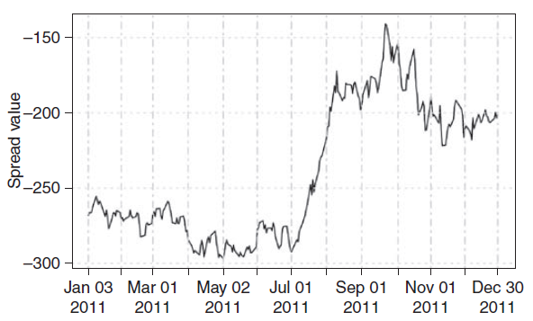
图6.5 苹果对SPY价格差
看起来并不像一个吸引人的交易信号，至少从当前来说是这样。可以看到有一段平稳的区域围绕某个均值上下波动，然后是从底部猛地拉升。尽管如此，我们仍然使用这个特定的价格差以强调现实中会出现的一些问题。
现在我们知道了样本内beta，我们也观察到这一时间段价格差的均值在-239.06左右。让我们将这些值应用到样本外去确定交易信号。
# 样本外起始与结束日期
start_date_out_sample <- "2012-01-01"
end_date_out_sample <- "2012-10-22"
range <- paste(start_date_out_sample, "::",
end_date_out_sample, sep = "")
# 样本外分析
spread_out_of_sample <- calculate_spread(x[range],
y[range], results$beta)
plot(spread_out_of_sample, main = "AAPL - beta * SPY",
cex.main = 0.8,
cex.lab = 0.8,
cex.axis = 0.8)
abline(h = results$level, lwd = 2)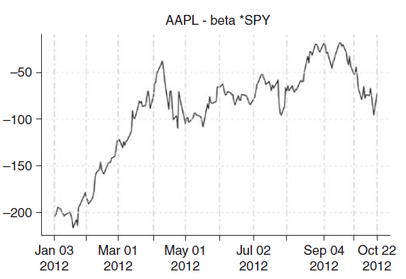
图6.6 样本外苹果对SPY价格差
生成信号和验证
样本外的图显示整个价格差是在样本内水平之上。这说明没有任何买入信号，只能卖出。此时此刻，我们是否足够信任价格差而卖出大量苹果股份和买入SPY股份只要价格差在均值上面？答案是否定的。似乎当我们在选择价格差或者第一步选择股票来配对的时候就有十分大的瑕疵。那么是否有任何方法来挽回这个情况？也许。会不会是beta值在我们研究样本外数据的时候就已经很过时了呢？毕竟，苹果是一个不断变化的公司，股票的价格也当然反应这一点。SPY是标准普尔500指数（S&P 500）的一个代理，它也许不能像苹果一样对波动有那么迅速的反应。这让我们觉得如果将苹果和另一同样类别且大小相当的公司做配对至少会更好些。
但是我们已经做了这么多工作了，为什么现在放弃呢？让我们进一步计算一些动态（滚动）beta系数。我们将假设苹果和SPY的配对还是可以交易的，尽管这个交易要放在更加精确的时间轴上。下面的R代码计算了十天的滚动beta及画出新的价格差。出于交易的目的，我们会每日更新beta（比方说，市场收盘的时候），并在下一个交易日使用新的beta。
同样地，这个实践侧重于有均值回复（mean reverting）性质的股票价格差，这样才具有潜在可交易性。到目前为止，我们的讨论并不涉及正确的头寸或者交易规则。如果beta在不停变化，那么头寸也可能跟着变。这个问题在之后需要解决。就目前来说，我们只关心用于生成交易信号的的新价格差变动。
# 交易日滚动窗口
window_length <- 10
# 时间区间
start_date <- "2011-01-01"
end_date <- "2011-12-31"
range <- paste(start_date, "::",
end_date, sep = "")
# 我们的股票配对
x <- SPY[range, 6]
y <- AAPL[range, 6]
dF <- cbind(x, y)
names(dF) <- c("x", "y")
# 用于计算beta值的函数
run_regression <- function(dF) {
return(coef(lm(y ~ x - 1, data = as.data.frame(dF))))
}
rolling_beta <- function(z, width) {
rollapply(z, width = width, FUN = run_regression,
by.column = FALSE, align = "right")
}
betas <- rolling_beta(diff(dF), 10)
data <- merge(betas, dF)
data$spread <- data$y - lag(betas, 1) * data$x让我们看看对应收益率的价格差是怎样的。唯一要变的是计算收益率的beta，而不是价格值的差。
returns <- diff(dF) / dF
return_beta <- rolling_beta(returns, 10)
data$spreadR <- diff(data$y) / data$y -
return_beta * diff(data$x) / data$x代码的最后可以给我们如下数据框（data frame）
tail(data)
## betas x y spread spreadR
## 2011-12-22 2.770586 119.60 383.07 138.70795 -0.002322110
## 2011-12-23 3.094533 120.67 387.66 53.33343 0.003311904
## 2011-12-27 3.450416 120.76 390.74 17.04417 0.007083611
## 2011-12-28 3.364819 119.18 387.00 -24.22055 0.004194527
## 2011-12-29 3.004804 120.41 389.38 -15.77781 -0.003361064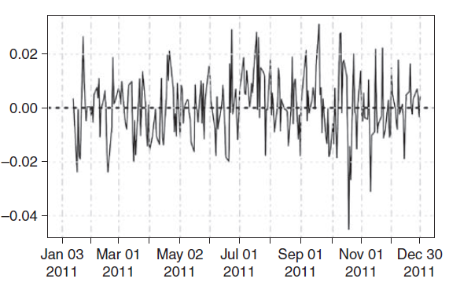
图6.7 滚动beta价格差
看起来，价格差看起来比以前更有均值回复性。为了确定合适的买入和卖出点，我们可以计算在一个10天滚动窗口内，价格差在历史数据上的标准差。假设价格差的变动在未来保持不变。
这里的价格差会给予价格值的差。
threshold <- sd(data$spread, na.rm = TRUE)
threshold
## [1] 143.7734我们再做一幅图：假设价格差的均值为0，画出均值上下一个标准差的线。
plot(data$spread, main = "AAPL vs. SPY In-Sample",
cex.main = 0.8,
cex.lab = 0.8,
cex.axis = 0.8)
abline(h = threshold, lty = 2)
abline(h = -threshold, lty = 2)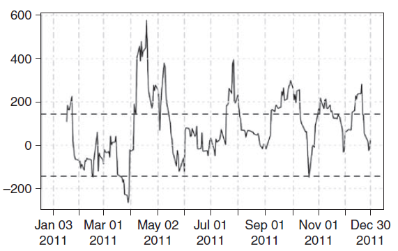
图6.8 SPY对苹果股票价格的差
这个价格差有多少利润呢？其中一个检验的方法就是写一个简单的回溯测试来跟踪假想的买入和卖出点。我们可以假设在价格差的一个时间点只做买入或者卖出。如果买了一个单位的价格差之后继续有买入信号，我们不会买更多的单位。我们反而会等到卖出信号，改变头寸。这是一个简单的方法。无论如何，这个实践旨在研究基本的价格差交易而已。更好的策略当然需要不同程度的买入和卖出方法。代码如下：
# 创建样本外价格差
# 日滚动窗口保持不变
window_length <- 10
# 时间区间
start_date <- "2012-01-01"
end_date <- "2013-12-31"
range <- paste(start_date, "::",
end_date, sep = "")
# 我们的股票配对
x <- SPY[range, 6]
y <- AAPL[range, 6]
# 将其捆绑为一个矩阵
dF <- cbind(x, y)
names(dF) <- c("x", "y")
# 计算样本外滚动beta值
beta_out_of_sample <- rolling_beta(diff(dF), 10)
# 买卖阈值
data_out <- merge(beta_out_of_sample, dF)
data_out$spread <- data_out$y -
lag(beta_out_of_sample, 1) * data_out$x
# 画出样本内价格差的分布区间
plot(data_out$spread, main = "AAPL vs. SPY out of sample",
cex.main = 0.8,
cex.lab = 0.8,
cex.axis = 0.8)
abline(h = threshold, lwd = 2)
abline(h = -threshold, lwd = 2)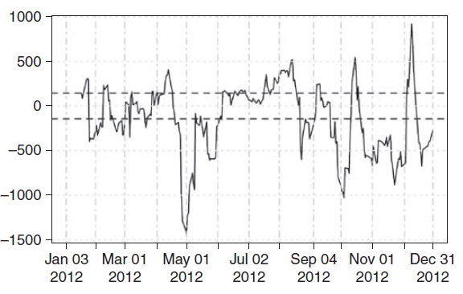
图6.9 样本外价格差及阈值带
交易逻辑可以从如下向量化的命令提取出来：
# 生成买卖信号
buys <- ifelse(data_out$spread > threshold, 1, 0)
sells <- ifelse(data_out$spread < -threshold, -1, 0)
data_out$signal <- buys + sells这里我们可以看看价格差买入和卖出的地方。我们可以将买入点用圆圈表示，卖出点用三角表示。
plot(data_out$spread, main = "AAPL vs. SPY out of sample",
cex.main = 0.8,
cex.lab = 0.8,
cex.axis = 0.8)
abline(h = threshold, lty = 2)
abline(h = -threshold, lty = 2)
point_type <- rep(NA, nrow(data_out))
buy_index <- which(data_out$signal == 1)
sell_index <- which(data_out$signal == -1)
point_type[buy_index] <- 21
point_type[sell_index] <- 24
points(data_out$spread, pch = point_type)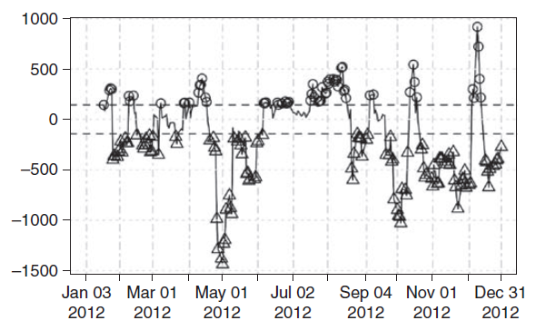
图6.10 叠加的买入和卖出信号
究竟我们有多少可能买入和卖出的信号？
num_of_buy_signals <- sum(buys, na.rm = TRUE)
num_of_sell_signals <- sum(abs(sells), na.rm = TRUE)
num_of_buy_signals
## [1] 303
num_of_sell_signals
## [1] 189价格差交易
既然我们买入和卖出的信号已经求出来了，我们需要考虑每次交易应该放多少钱。我们是否应该连续不断地进行买入或卖出交易，还是说这样会过度？如果我们已经有一个买入信号，又收到一个买入信号，我们要交易同样额度还是应增加？我们是在价格差回归均值的时候卖出还是在它走到对面的阈值？这些都是值得思考的问题，其答案则要通过反复推敲研究这些情形的回溯测试。
我们将自己的交易量锁定在100苹果股份和的SPY股份。交易量信息会被同样存储在data_out表格。这个表格用于记录所有我们关心的变量。除了交易量，我们还需要记录每笔交易花费、盈利多少。我们需要考虑每笔交易的实现交易（realized）和未实现（unrealized）交易的损益。这最终将帮助我们计算策略的资金曲线（equity curve）。
资金曲线是表示交易策略损益的图像。资金曲线在确定交易方式内在的风险和回报权衡上非常重要。最理想的情形当然是向上的直线且没有任何向下的波动。在现实世界中，每个策略都会有一段时间负收益，这在资金曲线里会被反映成一段下行的曲线。值得我们注意的点包括，一段时间内资金曲线的波动性和最大跌幅。
现在我们整合一下记录做法。我们将简化假设：收到明确买入或者卖出信号的次日，我们执行买入或者卖出交易。在现实中，交易每时每刻都可能发生。既然我们是处理每日收盘价格，考虑最糟糕的情形并无不妥。
如下是我们现在data_out表格的样子：
## beta_out_of_sample x y spread signal
## 2011-01-13 NA 128.37 345.68 NA NA
## 2011-01-14 1.7511157 129.30 348.48 NA NA
## 2011-01-18 1.1630714 129.52 340.65 113.84550 1
## 2011-01-19 1.2803161 128.25 338.84 189.67609 1
## 2011-01-20 1.2286891 128.08 332.68 168.69711 1
## 2011-01-21 0.8045108 128.37 326.72 168.99319 1
## 2011-01-24 2.4936855 129.10 337.45 233.58766 1
## 2011-01-25 2.7762163 129.17 341.40 19.29065 0
## 2011-01-26 3.0802946 129.67 343.85 -16.14196 0注意到我们有连续多个买入信号。为了简化策略，我们在每个事件只做一个看涨或看跌的头寸。同一头寸的连续信号不会被采用。计算股票X和Y（SPY和苹果）的交易量的示例如下：
prev_x_qty <- 0
position <- 0
trade_size <- 100
signal <- as.numeric(data_out$signal)
signal[is.na(signal)] <- 0
beta <- as.numeric(data_out$beta_out_of_sample)
qty_x <- rep(0, length(signal))
qty_y <- rep(0, length(signal))
for(i in 1:length(signal)) {
if(signal[i] == 1 && position == 0) {
# buy the spread买入价格差
prev_x_qty <- round(beta[i] * trade_size)
qty_x[i] <- -prev_x_qty
qty_y[i] <- trade_size
position <- 1
}
if(signal[i] == -1 && position == 0) {
# 初始时卖出价格差
prev_x_qty <- round(beta[i] * trade_size)
qty_x[i] <- prev_x_qty
qty_y[i] <- -trade_size
position <- -1
}
if(signal[i] == 1 && position == -1) {
#看空价差并买入
qty_x[i] <- -(round(beta[i] * trade_size) +
prev_x_qty)
prev_x_qty <- round(beta[i] * trade_size)
qty_y[i] <- 2 * trade_size
position <- 1
}
if(signal[i] == -1 && position == 1) {
#看多价差并卖出
qty_x[i] <- round(beta[i] * trade_size) + prev_x_qty
prev_x_qty <- round(beta[i] * trade_size)
qty_y[i] <- -2 * trade_size
position <- -1
}
}在样本外区域的最后，我们还残余一些这两只股票的股份。我们可以通过在最后交易日出清来相互抵消。
qty_x[length(qty_x)] <- -sum(qty_x)
qty_y[length(qty_y)] <- -sum(qty_y)我们将这些数列附在data_out表右侧，然后看看到目前为止究竟实现了什么：
data_out$qty_x <- qty_x
data_out$qty_y <- qty_y
data_out[1:3, ]
## beta_out_of_sample x y spread signal qty_x qty_y
## 2012-01-17 2.1511279 123.48 408.20 NA NA 0 0
## 2012-01-18 2.5890817 124.85 412.44 143.87168 1 -259 100
## 2012-01-19 2.0711505 125.51 411.13 86.17435 0 0 0
tail(data_out, 3)
## beta_out_of_sample x y spread signal qty_x qty_y
## 2012-12-27 6.5051194 138.15 499.45 -404.90307 -1 0 0
## 2012-12-28 5.6770827 136.66 494.14 -394.84962 -1 0 0
## 2012-12-31 6.3934172 138.98 516.04 -272.96095 -1 -668 100给定已经求出的beta，看起来上面的结果是符合实际的。我们也成功地忽略了连续买入和卖出信号。这个策略以每次只做一个交易差头寸进行着。
既然我们已知每个价格差需要买入和卖出的数量，接下来想要知道实现和未实现损益会是多少。
如果我们在第一天购买100份额，在第五天后出清，我们的实现损益应该是买入和卖出价格的差乘以总的交易量。然而在第2、3、4天，尽管头寸买卖已经结束，头寸仍然存在潜在的损益。我们称之为未实现损益成分。一个计算未实现损益的方法是将头寸标的到当前的市场价格。
我们会对上述价格差做类似的分析。分析的最终结果将得出两支股票的资金曲线，表示为结果的另外两列。
# 计算资金曲线的函数
compute_equity_curve <- function(qty, price) {
cash_buy <- ifelse(sign(qty) == 1,
qty * price, 0)
cash_sell <- ifelse(sign(qty) == -1,
-qty * price, 0)
position <- cumsum(qty)
cumulative_buy <- cumsum(cash_buy)
cumulative_sell <- cumsum(cash_sell)
equity <- cumulative_sell - cumulative_buy +
position * price
return(equity)
}
# 将资金曲线列并入data_out表
data_out$equity_curve_x <- compute_equity_curve(
data_out$qty_x, data_out$x)
data_out$equity_curve_y <- compute_equity_curve(
data_out$qty_y, data_out$y)
plot(data_out$equity_curve_x +
data_out$equity_curve_y, type = 'l',
main = "AAPL / SPY spread", ylab = "P&L",
cex.main = 0.8,
cex.axis = 0.8,
cex.lab = 0.8)图6.11展示苹果对SPY价格差的资金曲线的样子：
plot(data_out$equity_curve_x +
data_out$equity_curve_y, type = 'l',
main = "AAPL / SPY spread", ylab = "P&L",
cex.main = 0.8,
cex.axis = 0.8,
cex.lab = 0.8)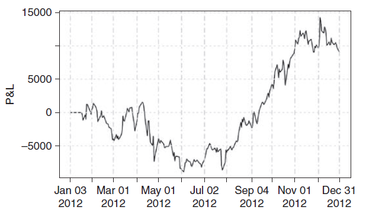
图6.11 SPY和苹果股票资金曲线
下面是一些观察结论：
1．曲线总趋势是向上的。这个策略应当可以在测试时间区间获得正的收益。
2．在某些大幅波动的时间段这个策略会导致损失，但也有一些时间损益大幅增加。
3．定量分析这个策略的风险会更有帮助。
如下是一些可以考虑的问题：
1．头寸怎么选择策略的风险概况函数？
2．信号怎么作为策略的函数？
3．是否存在可预见性（forward-looking）的偏差，如果有，我们怎么处理？
4．交易费用是否已经考虑了？
5．这个交易差是否可用于交易？
6．价格值的差对比收益beta是否合理？
在下面一章，我们将采用正当的方法。我们会利用quantstrat包来处理复杂的工作。建立交易记录和执行逻辑是乏味而易错的过程。我们更希望把这个活交给quantstrat，而我们自己更关注信号生成和交易逻辑。价格差的例子旨在告诉读者基本方法和怎样创造新事物。
风险考量
现在我们可以用一些统计量来帮助处理交易策略中好的和不好的性质。这些统计量将被用于对比类似的其他策略。在绝大多数情况下，这些用于作比较的统计量的公式用分子表示好的东西（比方说收益和收益率），而分母表示不好的东西（风险）。
我们不能只想到策略的收益而不考虑其风险。风险是很广义的名词，作为一个概念，它包括一个策略可能出差错的种种情形。交易员在日常工作中会遇到两个主要的风险：市场风险和运行风险。我们只考虑前者。
运行风险处理的事情诸如有错的程序、故障的设备、交易通讯连接损失、交易失误、不全面的内部监督、法律诉讼和欺诈[129]。巴塞尔协议II6定义的运行风险如下，“在期望损失之外的，由不完全的或者失败的内在过程、人和系统或者是外部事件（包括法律风险）导致的实际损失，以致于公司价值发生变化的风险”。
市场风险指的是由于交易工具价格变动引发的某个策略表现差异。这个变动可能来自外部因素，比方说经济报告、公司特定事件、政府条令、天气形态、长期干旱和其他各种问题。至少从交易策略来说，要注意反映这些因子对潜在的金融工具市场价格和交易量的影响。研究这些可观测的随机变量（价格和交易量）的变动，可以给我们足够的信息判定任何我们提出的交易策略的市场风险。市场价格波动就其本身来说并非是风险的一个好的替代品。假如我们买入某个股票，但是市场暴跌了20%。这个投资显然看起来非常有风险。然而当市场上涨了20%，我们的风险概念就不尽一致了。波动率和方差的风险度量（risk metrics）无差别地对待向上和向下的移动。另一些度量，比如说条件方差，则可以区别“好的”和“坏的”波动。
正如上述，波动并不关心某个价格的移动方向。它只关心这个移动的大小。这个在波动的公式中就反应出来了。公式的平方项消除了任何正的或负的方向偏差。
（6.1）
我们可以说看涨股票收益的小波动是一件好事，因为大幅下跌的概率很小。然而，这也妨碍我们获得恰当的盈利，因为上升空间也小了。学术界已经能够很好地理解怎么权衡这种风险/收益。现代投资组合理论（Modern Portfolio Theory）细致地处理了这种类型的权衡。金融工具的协方差关系，包括方差和相关系数的影响，在绝大多数文献示例中被用于主要风险标记。由于它的简单易行和通俗易懂，协方差矩阵在学术界和实际操作中被广泛应用。但这并不表明实际市场就是这样运作的。为了分析简单价格差，我们一方面会考虑波动率，另一方面也会研究其他的风险度量，比方说最大亏损、资金曲线形状和条件方差。
资金曲线的进一步探究
考虑资金曲线图6.12
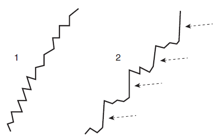
图6.12 相同终值的两个资金曲线
他们都是向上的曲线，但是第二个比第一个有更高的波动。第二个图的波动是由于不时发生的向上的猛增，最终会长期有益于策略。这并非实际发生的个例。这个图只为表明合适的波动也许并非一件坏事。那么图6.13说明什么？你更青睐哪一个？
在这个例子中，尽管第二个资金曲线最终结束在更高的价格，但出现在这段时间中的大损失值得我们关注。
那么图6.14曲线说明什么呢？
第二个资金曲线是由11次策略交易产生，而第一个只发生了3次交易。可以说较少交易次数的策略还没有来得及反映真正的表现。基于一个小样本判断统计量的好坏并非是一个得当的方法。一般来说，基于的数据越多，那么我们做决策的推断会更好。
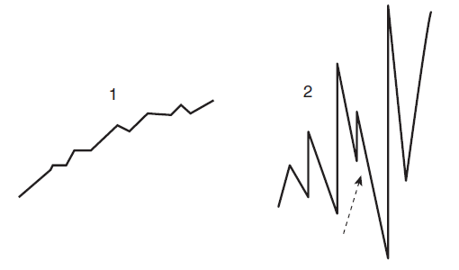
图6.13 不同终值的两个资金曲线
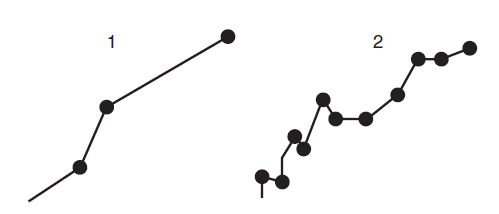
图6.14 不同交易次数的两个资金曲线
夏普比率（Sharpe ratio）是由William F.Sharpe在1966年发明的[140]。它是用无风险利率调整后的策略平均收益为分子，波动率为分母，计算出来的。绝大多数交易者认为大的夏普比率是好事情。然而，大的夏普比率并不意味着策略是没有风险的。
（6.2）
让我们考虑交易者销售无担保的每周脱价（out-of-the-money）看涨期权。绝大多数的时间，卖方会收集所有余下的费用。当一些时候头寸对卖方不利时，卖方会损失一些。但是绝大多数时候，卖方要么与费用持平要么盈利。由于持续的收益和低波动率，这个策略将会有很高的夏普比率。一个小的分母会使得夏普比率大幅增大。这是一个好的策略吗？完全不是。标的合约的一个异常变动可能会消除所有之前的盈利，并可能导致更严重的后果。既然无担保的看涨期权是一个无限制风险的策略，这可对卖方造成严重后果。
无论如何，夏普比率在学界和业界都非常受欢迎。当开发策略、显示回溯测试的结果、又或者记录其他信息时，夏普比率应当和其他相关风险度量一起被呈现。如下是在R中怎么计算夏普比率和损失统计量。
# 计算夏普比率
sharpe_ratio <- function(x, rf) {
sharpe <- (mean(x, na.rm = TRUE) - rf) /
sd(x, na.rm = TRUE)
return(sharpe)
}
# 计算最大损失信息
drawdown <- function(x) {
cummax(x) - x
}我们可以把这些应用到之前的价格差。
par(mfrow = c(2, 1))
equity_curve <- data_out$equity_curve_x + data_out$equity_curve_y
plot(equity_curve, main = "Equity Curve",
cex.main = 0.8,
cex.lab = 0.8,
cex.axis = 0.8)
plot(drawdown(equity_curve), main = "Drawdown of equity curve",
cex.main = 0.8,
cex.lab = 0.8,
cex.axis = 0.8)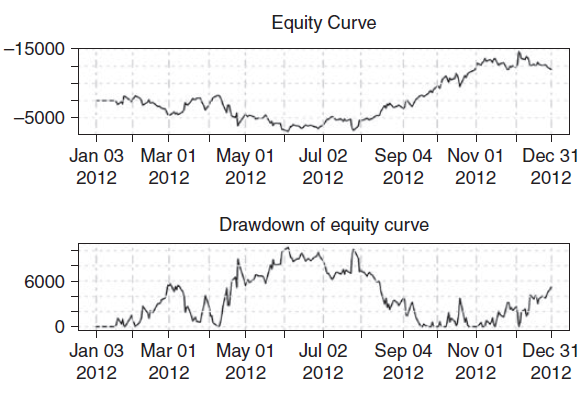
图6.15 损失曲线
我们注意到最大损失大约是$10,450。平均的损失大约是$3,760。策略的夏普比率是：
equity <- as.numeric(equity_curve[, 1])
equity_curve_returns <- diff(equity) / equity[-length(equity)]
# 去除无限大和空值
invalid_values <- is.infinite(equity_curve_returns)
| is.nan(equity_curve_returns)
sharpe_ratio(equity_curve_returns[!invalid_values], 0.03)
## [1] 0.0658528我们看到691天的夏普比率为0.065。既然夏普比率按照时间的平方根变化，我们可以将结果乘以系数。
（6.3）
有多达几百种风险度量，下面给出其中几种：
1．索提诺比率（Sortino ratio）非常类似于夏普比率。这两个的差别在分母。尽管夏普比率使用所有的波动率，但是索提诺比率只用负收益的波动。
（6.4）
2．损失久期（Drawdown duration）。我们已经知道最大损失统计是一个重要的风险矩阵。损失久期也是另一个需要分析的方向。这个测度告诉我们这个策略总共持续多久。更小的损失久期显然会更好。
3．欧米茄比率（Omega ratio）是一个将所有分布都进行考虑的风险测度。这个公式更侧重策略的正收益而非负收益。它是通过对的生存函数收益阈值以上区域进行积分，并除以累积函数到的区域上的积分
（6.5）
这正好可以分解上面的式子成为欧洲看涨期权和欧洲看跌期权的比率
（6.6）
用于评估该度量的R代码如下：
omega_ratio <- function(r, T) {
omega <- mean(pmax(r - T, 0)) / mean(pmax(T - r, 0))
return(omega)
}4．资金曲线的直线度测量（straightness measure）。理想的资金曲线应该是向上且也不会损失和低波动度的。一个理论上的直线可以从两个极端的点画出，之后实际的资金曲线的表现可以用这个理论上构建的直线来比较判断。我们希望的属性有
a.资金曲线有更多值在直线的上面
b.更少值游离在直线下面
这个方法的讨论如下可见： http://qusma.com/2013/09/23/equity-curve-straightness-measures/
5．溃疡指数 (Ulcer Index)。技术上的指标也可以应用到资金曲线。溃疡指数关注最近的高价，也关注比它低的价格，叫做回撤价格。公式如下：
（6.7）
（6.8）
策略属性
一个数字并不足以说明对某个特定的交易策略我们关心的属性。鉴于可扩展性，也许我们应该关注交易损益的变化，而非寻找具有最高的夏普比率或者最小的最大损失策略。当交易的大小低于市场可支持的容量，一个策略可能会显示出很好的风险结构。然而，当策略的市场参与率增加，策略表现可能会被极大拉低。当设计有可能吸收大量资本的策略时，这个可扩展性和流动性度量是重要且需要思考的。
另一个交易员要注意的策略属性是市场交易的频率。一个高频的做法可能满足某些交易员，但并非适用于其它人。可观测到的交易指令的频率的风险水平是关于交易员对交易技术平台满意度的一个函数。同时也会与资金分配相关。对于较少的资金分配，高吞吐量策略可能是明智的。但是大型共同基金可能回避这样的做法。
每日收盘时平仓的策略可能也比将头寸保留到第二天的策略会更受欢迎。后者不仅要求更大的资金，而且风险也会相应增大。
一个策略的g值（g-score)是另外一个值得提及的属性。这个是我发明的用于正确记录法规灰线的主观测度。一些交易员通常提出的交易想法在某些情况下会不可避免地触及监管审查。一个建议的g值计算方法如下：一个完全基于内部交易信息的盈利交易策略是非法的，这个策略的g值为0。一个买入并持有的长期投资策略可得10分。如果对任何得到g值8、9或10分的建议的策略有所怀疑，那么从交易员角度来看可能并不值得投入任何时间或者精力。再次重申这是一个主观的测度，g值的目的就是使定量分析师和交易员考虑任何交易方法的隐含合法性。
一个测量市场交易命令到达率的方法是看连续时间差。这个“交易久期”是另一个衡量交易表现的统计参数。这个参数在文献中经常被引用且与我们之前考虑的高频对低频策略的想法相关。如下是一些计算交易时间间隔长度的R代码：
# 找出交易发生的时刻
trade_dates <- data_out$qty_x[data_out$qty_x != 0]
# trade_dates是一个xts对象，其索引包含必要的时间信息
duration <- as.numeric(diff(index(trade_dates)))
# 汇总统计量
summary(duration)
## Min. 1st Qu. Median Mean 3rd Qu. Max.
## 1.00 13.50 21.00 31.84 44.00 128.00
# 交易久期的直方图
hist(duration, breaks = 20,
main = "Histogram of trade durations",
cex.main = 0.8,
cex.lab = 0.8,
cex.axis = 0.8)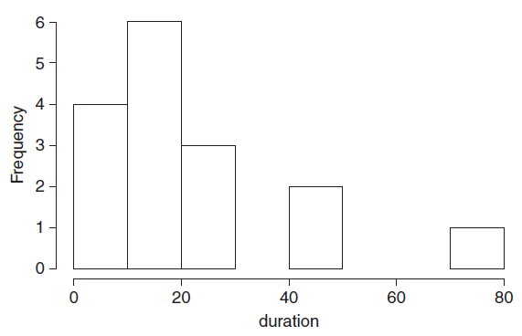
图6.16 交易久期的直方图
一个简单的买入和持有策略在相同的时间窗口内会有怎样表现呢？这个问题值得思考，因为我们可以使用这样买入和持有策略当作比较的基准线。很多共同基金经理以某个基本收益率来参照衡量他们业绩的。我们可以用SPY交易基金替代市场，分析一个单向看涨的策略会表现如何。
总结
这一章介绍了构建和买卖两支股票的交易差的概念。使用普通最小二乘法和总体最小二乘法技术对多条感兴趣的时间序列创建合适的beta系数。我们定义了一个简单的交易差交易策略，在R代码中实现了适当的买卖逻辑。这一章的主要目的是展示一个评估交易猜想的方法。我们也概述了样本内和样本外分析的想法。风险考量这一小节意图说明资金曲线的概念，以及想要的策略属性。提出不各种风险测量，比方说夏普比率、欧米茄比率和其他的量度。
翻译：邓一硕 审校：杨环